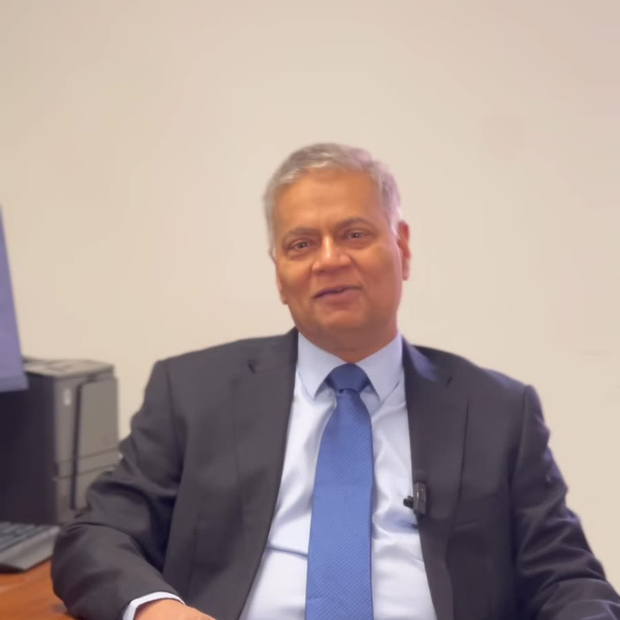

What his patients say
Independent, verified reviews from iWantGreatCare, alongside what patients say about Mr Ullah in Google reviews of The Holly.
Average rating on iWantGreatCare. 100% of his verified reviews are five stars.
Mr Z Ullah is supremely the best surgeon. In him I trust completely and feel so lucky to have had him as my surgeon. His attention, professionalism and care is exemplary.
Patient at The Holly Private Hospital · 27 November 2025
Read on iWantGreatCare ↗Mr Ullah is a very, kind, professional doctor.
W.C. · Google review of The Holly · September 2026
Read on Google ↗Thanks to Mr Ullah's care and skills - I am still here 3 years later… His kindness and compassion is everything a doctor should have.
Patient at The Holly Private Hospital · 30 April 2024
Read on iWantGreatCare ↗He explains things thoroughly to you and takes the time to listen to patients, asking many questions and showing genuine concern. He never rushes his consultations and is a highly empathetic Doctor.
Patient at Whipps Cross University Hospital · 18 July 2024
Read on iWantGreatCare ↗Doctor Ullah and team was also fantastic.
H.C. · Google review of The Holly · June 2026
Read on Google ↗Dr Ullah saved me and my sanity with an incredibly well organised and executed breast surgery. I'm so grateful to have met him and his experienced, friendly team.
Patient at The Holly Private Hospital · 2 March 2023
Read on iWantGreatCare ↗He listens intently to all questions and concerns and makes you feel heard… All this being said his skill as a surgeon is outstanding.
Patient at Whipps Cross University Hospital · 24 February 2022
Read on iWantGreatCare ↗After having a scare of finding a lump on my breast. I found Dr Ullah and his team at Holly's hospital via bupa and I cannot praise enough the amazing care that I had. I felt comfortable immediately and everything moved swiftly…
E.G. · Google review of The Holly · 2025
Read on Google ↗Mr Ullah has been my surgeon since I was diagnosed with Breast cancer in 2016. He is kind and compassionate…
Patient at Whipps Cross University Hospital · 10 July 2024
Read on iWantGreatCare ↗Excerpts are reproduced word for word from public reviews on iWantGreatCare and Google, shortened where marked. Google reviewers are shown by their initials.

Meet Mr Ullah · a short film by Nuffield Health The Holly ↗Share your experience
If Mr Ullah has treated you, a review helps future patients choose their care. Reviews can be left anonymously.
Let’s get you a clear answer
Most breast symptoms turn out to be nothing serious. A single appointment is usually all it takes to know for sure. Insured and self-funding patients are welcome at all three clinics.